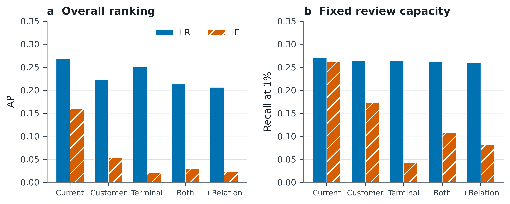
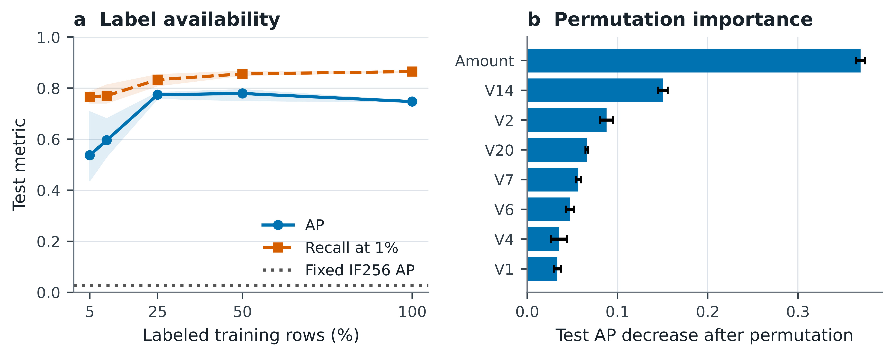

AIAA 3111 / GROUP 20
Credit Card Fraud: Which Payments Should We Review?
 Report and code
Report and code
Card issuers use automated checks to spot risky payments, and staff can look into selected cases. We test which payments staff should check first when time is limited.
Six payments. Two slots.
Gold cells mark known frauds. Only the first two are reviewed.
A finds both frauds. B leaves E outside the list.
ULB HELD-OUT TEST · 1% CAPACITY
64 of 74 frauds found
Weighted LR’s first 568 review slots
10 frauds fall below the cutoff.
1. Build the list
Clean the data (preprocessing), train on early payments and test on later ones.
- Train Fit models
- Validate Choose settings
- Test Rank later payments
| Dataset | Train | Validation | Test |
|---|---|---|---|
| ULB | 170,235 / 342 | 56,745 / 57 | 56,746 / 74 |
| Handbook | 292,139 / 1,752 | 145,315 / 1,291 | 145,739 / 1,280 |
| PaySim | 379,109 / 326 | 127,377 / 64 | 128,873 / 413 |
Payments / frauds. ULB: deduplicated card data. Handbook: simulated card payments. PaySim: sampled mobile transfers.
The highest scores get the review slots. Break ties by row ID. The main test reviews 1%, rounded up.
Classifiers learn from known fraud and normal examples. K-means scores distance from a group center. Isolation Forest (IF) ranks unusually easy-to-isolate payments without using fraud labels to fit.
2. Same 568 reviews. Which list finds more?
On those later payments, each model gets 568 review slots. Found counts known frauds in the list. Normal counts other payments staff would check.
| ULB ranking | AP | Found | Normal | Recall |
|---|---|---|---|---|
| Weighted LR† | 0.7475 | 64 | 504 | 86.49% |
| Logistic regression | 0.6909 | 64 | 504 | 86.49% |
| Random forest | 0.7845 | 64 | 504 | 86.49% |
| Undersampled LR | 0.3545 | 63 | 505 | 85.14% |
| Decision tree | 0.3012 | 45 | 523 | 60.81% |
| Gaussian naïve Bayes | 0.0578 | 44 | 524 | 59.46% |
| Isolation Forest | 0.0660 | 41 | 527 | 55.41% |
| K-means distance | 0.0460 | 37 | 531 | 50.00% |
† Selected on validation. AP = average precision. Recall = share of all frauds found. LR = logistic regression.
Three methods tie at 64 frauds. Random forest leads in AP. A random list would find 0.74 frauds in expectation. Sorting by amount finds 3 and covers 46.56% of fraud amount.
3. Is a longer list worth the extra reviews?
Keep the same ranking and change how many payments staff can check (Top-K). Compare the 284 and 568 bars, then see how much fraudulent spending each list covers.
| Budget | Reviews | Found | Normal | Fraud amt. |
|---|---|---|---|---|
| 0.1% | 57 | 50 | 7 | 57.27% |
| 0.5% | 284 | 63 | 221 | 69.37% |
| 1% | 568 | 64 | 504 | 69.59% |
| 2% | 1,135 | 65 | 1,070 | 69.69% |
Fraud amt. = share of fraudulent spend represented in the list.
4. How steady is LR’s lead?
ULB: LR found 64; IF found 41. How much does that gap vary across samples?
| Weighted LR − IF | Gap | 95% interval |
|---|---|---|
| Recall, rows | 31.08 pp | 20.83–41.78 |
| Recall, time blocks | 31.08 pp | 18.69–44.24 |
| AP, time blocks | 0.6815 | 0.5469–0.7926 |
Both recall intervals favor LR. The fitted models stay fixed across 500 row draws and 200 half-hour block draws. pp = percentage points.
5. Do past payments help the rankings?
On Handbook, keep IF as a comparison that can train without fraud labels. Add past activity on the left (feature ablation); hide some on the right.


Do recent payments help?
Three-payment patterns raise both-history LR from 334 to 351 detections with or without their order. Relative amount finds 255 versus 346 by amount alone, with 46 unique detections.
Late labels and first-time customers
| Handbook LR snapshot | Static | 0d | 1d | 7d |
|---|---|---|---|---|
| Frauds found / 1,458 reviews | 334 | 341 | 339 | 340 |
Weekly development snapshots were held fixed on test. The 26 new-customer payments contain no frauds; no test payment uses a new terminal.
6. What changes on PaySim?
Fit the models on mobile payments. Which finds more fraud in the top 1%?
| PaySim ranking | AP | Found / 413 |
|---|---|---|
| Isolation Forest | 0.0447 | 102 |
| Amount | 0.0798 | 94 |
| Weighted LR | 0.0634 | 80 |
IF finds 102; LR finds 80. IF leads at 1% (1,289 reviews). Sorting by amount leads by AP across the full list.
7. What does the review list miss?
From left to right: check what the model learns from, use Apriori to flag patterns, then use GMM to find groups the list overlooks.
What does the model learn from?
| Training labels used | 5% | 10% | 25% | 50% | 100% |
|---|---|---|---|---|---|
| Found | 55–58 | 55–60 | 60–63 | 63–64 | 64 |

Shuffling amount hurts the ranking most (AP drops 0.3695). The model puts a normal payment 3rd and a fraud 783rd, outside the 568 review slots.
Apriori: Which patterns flag fraud?
Apriori combines common conditions to find patterns linked to fraud.
| ULB rules added | Flagged | Frauds | Extra frauds |
|---|---|---|---|
| First rule | 3,846 | 52 | 52 |
| First two | 21,161 | 71 | 19 |
| First three | 22,794 | 71 | 0 |
| All 21 | 56,053 | 74 | — |
Count each flagged payment once. Rule 1: 1.35% confidence, 10.37× lift.
56,053 flags exceed 568 slots. They include all 10 LR misses and 504 false alarms. A Handbook rule flags amounts ≥65.22 and ≥1.2× the customer’s 7-day mean (514 frauds in 28,997 flags).
Can checking more kinds of cases help?
| Handbook feedback | Static | Updates | Updates + exploration |
|---|---|---|---|
| Frauds found | 346 | 345 | 343–344 |
In this simulation, staff check 100 a day and get labels two days later. Exploring cases found no extra frauds.
Who gets left out of the list?
| Handbook scenario | Frauds | LR found | IF found | Rule matches |
|---|---|---|---|---|
| 1 | 73 | 70 | 7 | 73 |
| 2 · terminal compromise | 800 | 4 | 9 | 650 |
| 3 | 407 | 260 | 123 | 399 |
4 of 800 foundLR found four frauds linked to compromised terminals. Rules matched 650 with no review limit.
0 of 141 foundGMM (Gaussian mixture model) groups similar payments by amount and recent activity. The LR list gave this low-amount group two slots. Both were normal.
What should the review team do?
- Set the queue size from staffing.
Ask how many cases staff can finish per shift. On ULB, moving from 284 to 568 reviews adds one fraud and 283 normal payments. - Measure the value of each review.
At the same workload, compare frauds found, normal reviews and fraud amount covered. Weigh the cost of a normal review against the cost of missing fraud. - Watch for changes and blind spots.
Retest on later payments when history is missing or payment types change. PaySim had a different leader; the Handbook list missed most terminal fraud.